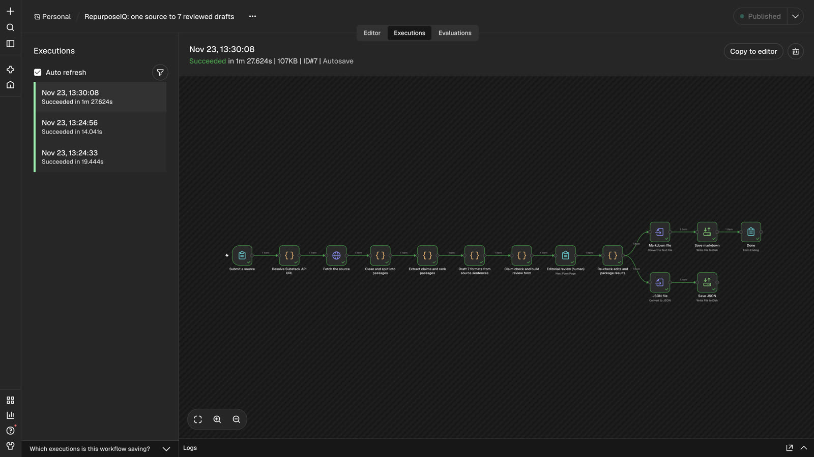
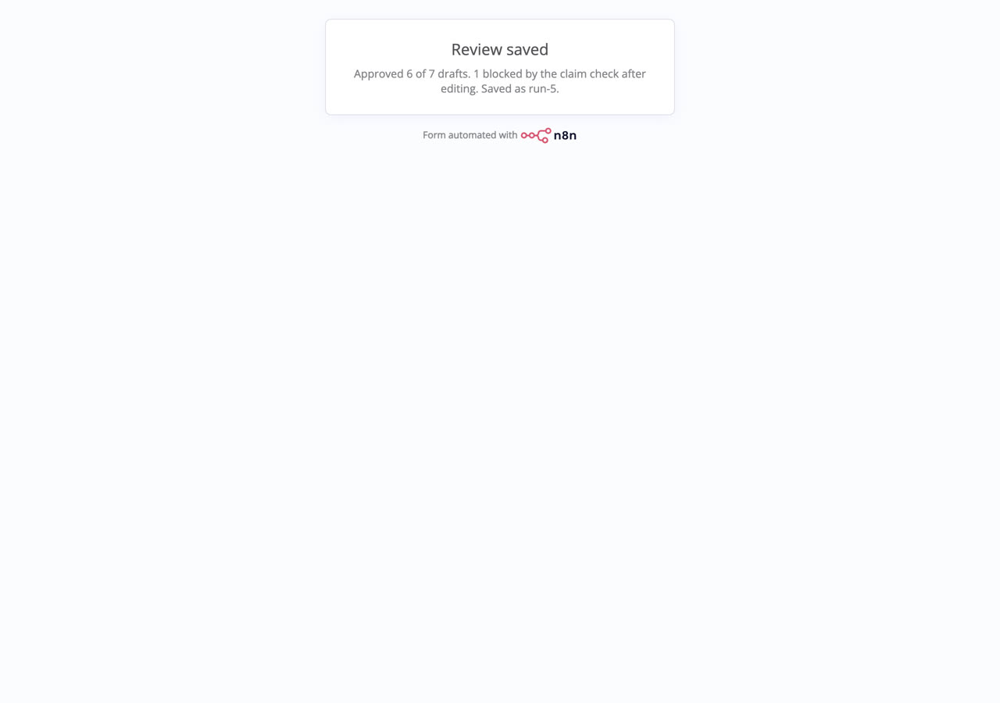

Built from the source
Templates place the article's own sentences, so a draft can't paraphrase its way into a new claim.
RepurposeIQ turns one published article into seven channel drafts built from its own sentences. Every number is checked against the source, an editor signs off, and edits are checked again before anything is saved.
3 real runs on my newsletter.
2 edited stats caught and blocked. 0 AI model calls.
ChatGPT opens 61% of answers with a brand recommendation…
Templates place the article's own sentences, so a draft can't paraphrase its way into a new claim.
Each number must appear in the source, inside a sentence whose wording still matches. 61% can't quietly become 71%.
n8n pauses on a review page. The editor adds voice, approves or sends back, and edits are checked again.
An n8n Form Trigger takes a published Substack URL, an optional CTA link and the editor's name.
HTTP Request calls the post's public API. Code strips HTML, drops reference lists and splits the text into numbered passages.
Passages with numbers, named studies or a clear contrast rank higher. Each draft records the passages it used.
LinkedIn, X thread, newsletter teaser, carousel, reel script, sales email and quote cards, built from source sentences.
Each number must exist in the source inside matching wording, or the draft is flagged before review.
n8n waits on a Form page. The editor edits drafts and approves or sends everything back.
Edits are checked again. Failures are blocked; the rest is written to disk as Markdown and JSON.
Pick one of my Overlooked Memo issues or paste your own text. Then change a number in a draft and watch the check catch it.
23 Nov 2026. I submit an issue, review seven drafts, add a line of voice and change one stat on purpose. The re-check blocks that draft and saves the rest.




B2B SaaS content and GTM marketer. I built RepurposeIQ to show how I run content operations: one strong source, many channel-ready drafts, and a review step that keeps the facts intact. The sample sources are issues of my newsletter, The Overlooked Memo.